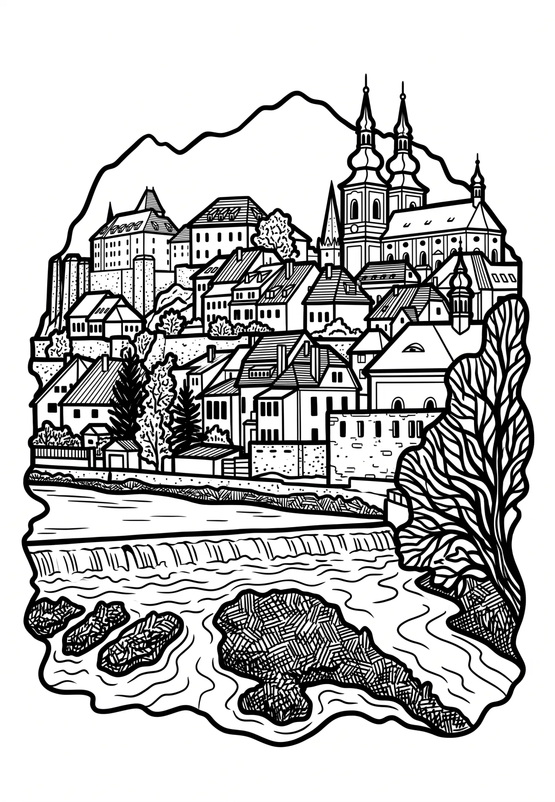

Kadaň
Ústecký kraj · 300 m n. m.

město · #030
Kadaň (německy Kaaden) je město v okrese Chomutov v Ústeckém kraji ležící jihozápadně od Chomutova na levém břehu řeky Ohře, důležité kulturní a turistické centrum severozápadních Čech, někdejší královské město. Žije zde přibližně 18 tisíc obyvatel. Kadaň je centrem historické oblasti Kadaňska, rozkládající se od Vejprt v Krušnohoří až po oblast Doupovských vrchů.